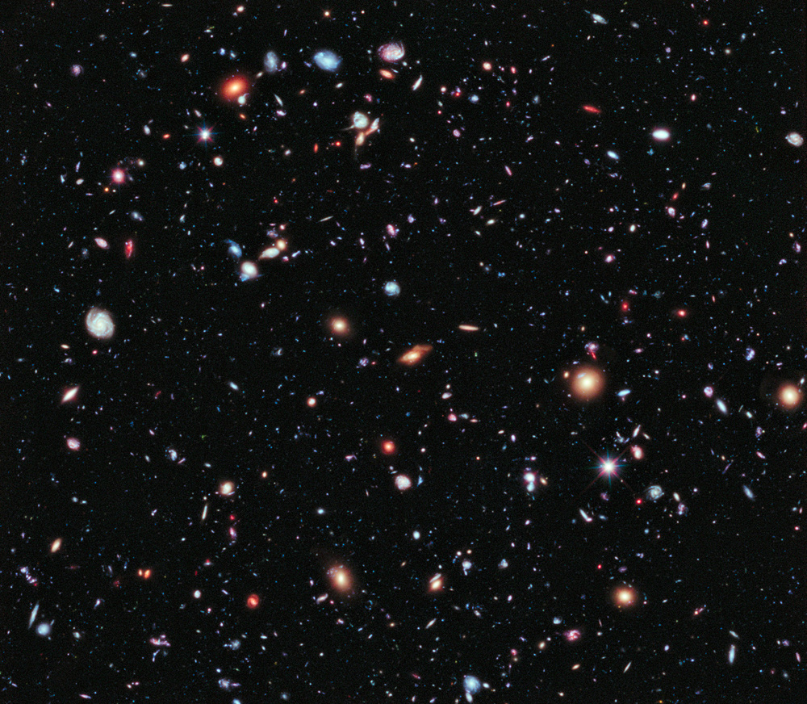

01 / Quantitative research
Intraday Crypto Alpha & Machine Learning Research
Minute-level Binance research using 2020–2025 data, Static Time-of-Day normalization, and trading-cost-aware evaluation.
Python, LightGBM
Data science / UC San Diego
Quantitative research.
Machine learning.
I’m Ethan (Yucheng) Cai, a Data Science student at UC San Diego with a minor in Mathematics. My work spans quantitative research, machine learning, and reproducible data analysis.

Research & projects
01 / Quantitative research
Minute-level Binance research using 2020–2025 data, Static Time-of-Day normalization, and trading-cost-aware evaluation.
Python, LightGBM
02 / Systems integration
Connected smart contracts, a Django backend, and a WeChat Mini Program; verified registration and proposal submission.
FISCO BCOS, WeBASE, Django
03 / Predictive modeling
LightGBM modeling on 1.5 million player records, with 51 derived features, grouped validation, and a two-model ensemble.
Python, LightGBM, CatBoost
04 / Computer vision
MobileNetV3 and GCBlock experiments balancing precision and recall, with approximately 20% less inference time in project tests.
Python, PyTorch, MobileNetV3
B.S. in Data Science · Minor in Mathematics
University of California, San Diego